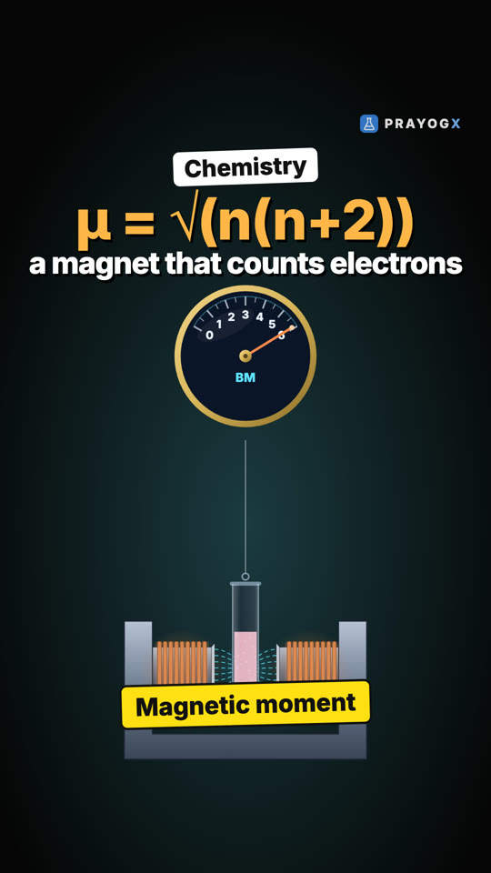

Choose your class
Every subject is laid out chapter by chapter. Each topic has a short Doodle video, notes you can download and a quick quiz.
Class 9Motion, matter, the cell and number systems: the foundations of school science and maths.ScienceMathematics21 videosClass 10Light, electricity, chemical reactions, life processes and the algebra and geometry of board year.ScienceMathematics9 videosClass 11Mechanics, thermodynamics, atomic structure, bonding, functions and the living world.PhysicsChemistryMathematicsBiology16 videosClass 12Electromagnetism, optics, modern physics, solutions and kinetics, calculus and genetics.PhysicsChemistryMathematicsBiology44 videosExtra / SupplementaryCurious questions beyond the syllabus: why the sky is blue, why we yawn, why 0.999… equals 1, and more.ScienceBiologyMathematics11 videos
Newest videos
 Iron Bends, Steel Holds: Interstitial Compounds and AlloysPure iron bends because layers of atoms slide over each other; less than 2 % carbon in the gaps locks the layers and gives hard steel. Interstitial compounds form when small atoms such as H, C or N are trapped in a metal lattice (TiC, Mn₄N, Fe₃H, VH₀.₅₆, TiH₁.₇): non-stoichiometric, very hard, higher melting than the pure metal, still conducting and chemically inert. Alloys form when atoms of similar size (metallic radii within about 15 %, e.g. Fe 126 and Cr 129 pm) are distributed randomly among each other: stainless steel, brass (Cu–Zn) and bronze (Cu–Sn), hard and often high melting.The d- and f-Block Elements · Chemistry
Iron Bends, Steel Holds: Interstitial Compounds and AlloysPure iron bends because layers of atoms slide over each other; less than 2 % carbon in the gaps locks the layers and gives hard steel. Interstitial compounds form when small atoms such as H, C or N are trapped in a metal lattice (TiC, Mn₄N, Fe₃H, VH₀.₅₆, TiH₁.₇): non-stoichiometric, very hard, higher melting than the pure metal, still conducting and chemically inert. Alloys form when atoms of similar size (metallic radii within about 15 %, e.g. Fe 126 and Cr 129 pm) are distributed randomly among each other: stainless steel, brass (Cu–Zn) and bronze (Cu–Sn), hard and often high melting.The d- and f-Block Elements · Chemistry Iron, Nitrogen and an Electron Ferry: Why Transition Metals Are Good CatalystsA catalyst speeds up a reaction without being used up by lowering its activation energy. Transition metals are good catalysts because they can adopt multiple oxidation states and form complexes. On a metal surface (iron in the Haber process, V₂O₅ in the Contact process, nickel in hydrogenation) reactant molecules bond to surface atoms using 3d and 4s electrons, so their concentration rises and their bonds weaken. In solution, Fe³⁺ ferries electrons between I⁻ and S₂O₈²⁻ (2Fe³⁺ + 2I⁻ → 2Fe²⁺ + I₂; 2Fe²⁺ + S₂O₈²⁻ → 2Fe³⁺ + 2SO₄²⁻) and is regenerated.The d- and f-Block Elements · Chemistry
Iron, Nitrogen and an Electron Ferry: Why Transition Metals Are Good CatalystsA catalyst speeds up a reaction without being used up by lowering its activation energy. Transition metals are good catalysts because they can adopt multiple oxidation states and form complexes. On a metal surface (iron in the Haber process, V₂O₅ in the Contact process, nickel in hydrogenation) reactant molecules bond to surface atoms using 3d and 4s electrons, so their concentration rises and their bonds weaken. In solution, Fe³⁺ ferries electrons between I⁻ and S₂O₈²⁻ (2Fe³⁺ + 2I⁻ → 2Fe²⁺ + I₂; 2Fe²⁺ + S₂O₈²⁻ → 2Fe³⁺ + 2SO₄²⁻) and is regenerated.The d- and f-Block Elements · Chemistry One Drop, Blood Red: Why Transition Metals Form ComplexesA complex is a central metal ion bonded to several ligands (anions or neutral molecules) by coordinate bonds, in which the ligand gives both electrons. One drop of KSCN turns pale-yellow Fe³⁺ blood red as [Fe(SCN)(H₂O)₅]²⁺ forms, while the K⁺ from the same drop grabs nothing. Transition-metal ions form far more complexes because they are small (Fe³⁺ 65 pm vs K⁺ 138 pm), highly charged (+3 vs +1) and have d orbitals available for bond formation.The d- and f-Block Elements · Chemistry
One Drop, Blood Red: Why Transition Metals Form ComplexesA complex is a central metal ion bonded to several ligands (anions or neutral molecules) by coordinate bonds, in which the ligand gives both electrons. One drop of KSCN turns pale-yellow Fe³⁺ blood red as [Fe(SCN)(H₂O)₅]²⁺ forms, while the K⁺ from the same drop grabs nothing. Transition-metal ions form far more complexes because they are small (Fe³⁺ 65 pm vs K⁺ 138 pm), highly charged (+3 vs +1) and have d orbitals available for bond formation.The d- and f-Block Elements · Chemistry The Light Thief: Why Transition-Metal Ions Are ColouredLigands split the five d orbitals of a transition-metal ion into a lower and an upper level. A d electron absorbs the one band of visible light whose energy equals the gap and jumps up (a d–d transition); the rest of the light reaches the eye, so we see the complementary colour: Ti³⁺(aq) eats green-yellow and looks purple, Cu²⁺(aq) eats red-orange and looks blue. The ligand sets the gap (ruby and emerald are both Cr³⁺), and d⁰ / d¹⁰ ions such as Sc³⁺ and Zn²⁺ are colourless.The d- and f-Block Elements · Chemistry
The Light Thief: Why Transition-Metal Ions Are ColouredLigands split the five d orbitals of a transition-metal ion into a lower and an upper level. A d electron absorbs the one band of visible light whose energy equals the gap and jumps up (a d–d transition); the rest of the light reaches the eye, so we see the complementary colour: Ti³⁺(aq) eats green-yellow and looks purple, Cu²⁺(aq) eats red-orange and looks blue. The ligand sets the gap (ruby and emerald are both Cr³⁺), and d⁰ / d¹⁰ ions such as Sc³⁺ and Zn²⁺ are colourless.The d- and f-Block Elements · Chemistry
A Balance That Counts Electrons: Paramagnetism and the Spin-only Magnetic MomentEvery electron is a tiny magnet; in a pair the spins cancel, so only unpaired electrons make an ion paramagnetic. Count them from the ion's d configuration (singly up to d⁵, then pairing) and the spin-only formula gives the magnetic moment: μ = √(n(n+2)) BM, from 1.73 for one unpaired electron to 5.92 for Mn²⁺ (d⁵). A measured μ (Gouy balance) counts the unpaired electrons.The d- and f-Block Elements · Chemistry Fluorine Fails, Oxygen Wins: Highest Oxidation States in Oxides and FluoridesA metal reaches its highest oxidation state only with oxygen or fluorine. Fluorine is the more electronegative, yet manganese's highest fluoride is MnF₄ (+4) while its oxide reaches +7 (Mn₂O₇, MnO₄⁻): one oxygen forms a multiple bond and counts two electrons, one fluorine counts only one. From Sc₂O₃ to Mn₂O₇ the highest oxide's oxidation state equals the group number.The d- and f-Block Elements · Chemistry
Fluorine Fails, Oxygen Wins: Highest Oxidation States in Oxides and FluoridesA metal reaches its highest oxidation state only with oxygen or fluorine. Fluorine is the more electronegative, yet manganese's highest fluoride is MnF₄ (+4) while its oxide reaches +7 (Mn₂O₇, MnO₄⁻): one oxygen forms a multiple bond and counts two electrons, one fluorine counts only one. From Sc₂O₃ to Mn₂O₇ the highest oxide's oxidation state equals the group number.The d- and f-Block Elements · Chemistry